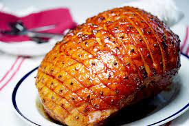

Ham

Heavenly Holiday Ham
A tasty glazed ham that your guests will devour.
Ingredients
- ¾ cup water, or as needed
- 2 Whole star anise
- 12 Whole cloves
- 1 (7 pound) country style ham
- 1 cup firmly packed brown sugar
- 1/4 cup honey
- 2 tablespoons Dijon mustard
- 2 tablespoons rice vinegar
- 1 1/2 tablespoons freshly ground black pepper
- 1/2 teaspoon Worcestershire sauce
- 1 pinch cayenne pepper
Steps
- Preheat oven to 325 degrees F (165 degrees C)
- Pour water, star anise, and cloves into
bottom of a roasting pan. Place a roasting rack
into the pan over the water, anise, and cloves; place ham on rack.
Cut 1/4 inch deep slashes 1/2 inch apart lengthwise
and crosswise across the top of the entire ham.
- Bake ham in the preheated oven for 20 minutes.
Whisk brown sugar, honey, mustard, vinegar, black pepper,
Worcestershire sauce, and cayenne pepper together in a bowl
until glaze has a thick, smooth consistency.
- Brush glaze all over ham. Continue baking ham, brushing glaze
on every 20 minutes, until glaze is deep golden and ham heated through,
about 2 hours and 10 minutes. An instant-read thermometer inserted into the
center should read 130 degrees F (54 degrees C).
- Use a kitchen torch to heat the glaze on the ham until it is crispy and caramelized,
2 to 5 minutes.